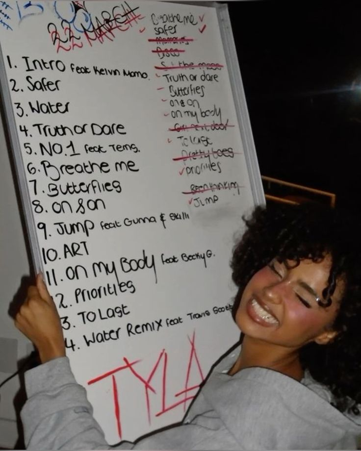
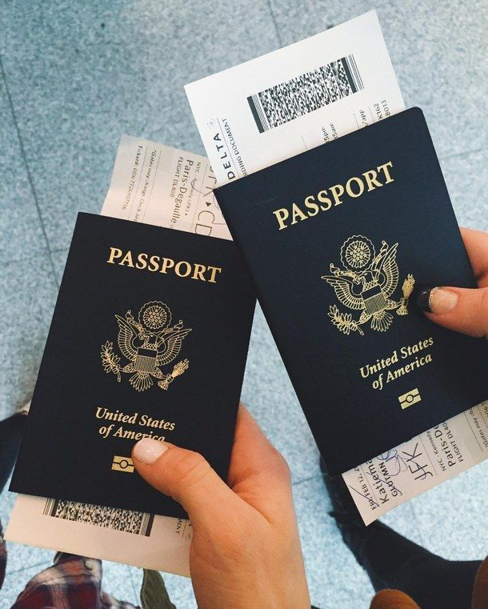
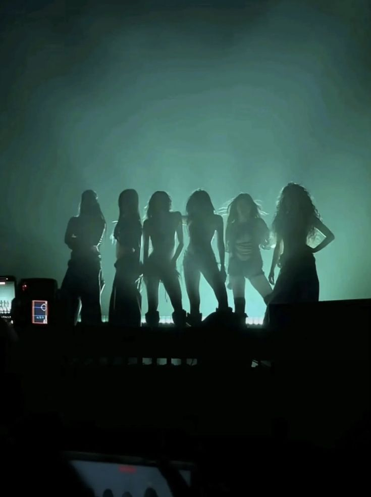
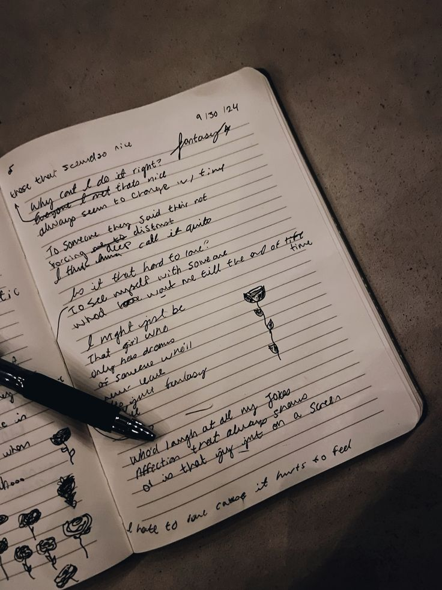
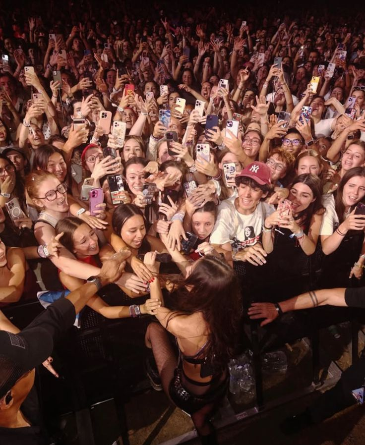

Every successful group begins with dreams, ambition, and goals for the future. Project 101 aims to create unforgettable memories, meaningful performances, and opportunities for creativity, growth, and connection.

One of the biggest goals of Project 101 is creating and releasing original music that reflects the group’s identity, creativity, and emotions. Music allows the team to express themselves artistically while connecting with listeners around the world.

Traveling together for performances, schedules, and experiences is an important part of growing as a group. Visiting different places creates unforgettable memories while allowing members to learn from new environments and cultures.

Performing in front of audiences is one of the most exciting and rewarding experiences for a group. Live stages help members build confidence, improve stage presence, and create meaningful connections with supporters.

Creating original songs allows the group to tell stories, express emotions, and develop its own artistic identity. Songwriting encourages creativity while helping members contribute personally to the group’s music and message.

Building a supportive fandom is an important goal for every group. Fans provide encouragement, motivation, and unforgettable memories throughout the journey. A strong connection between artists and supporters helps create a positive and lasting community.